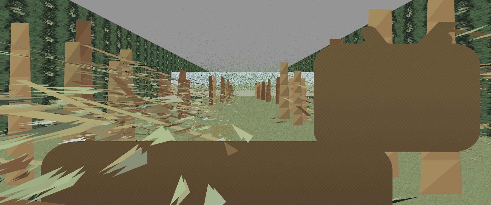

Rendered Artifact
This is a small graphics renderer, not just an image prompt. The source document describes a self-contained Python program using NumPy and Pillow. It projects a corridor-like forest scene, fills rows with front-to-back painter ordering, and uses procedural materials instead of bitmap texture art for the important surfaces.

The Claim
The useful idea is narrow and practical: if the visible detail belongs to a surface, a 2D SDF in that surface's UV or texel space can be much cheaper than treating the same detail as a 3D signed-distance scene. The renderer evaluates a material at the projected surface point and gets pixelless detail without a texture atlas.
The image uses several cheap representations at once: UV-SDF ground material, block-noise wall textures, point-cloud speckles for distant foliage, shaded or solid triangles for trunks, branches, and ferns, and a deer billboard whose silhouette is tested as an SDF in its own UV square.
What The Source Does
The source code is organized around projection, palette generation, procedural textures, scene construction, SDF primitives, row renderers, and a camera path. The row renderer is the important part: each scanline carries a filled mask, draws closer triangles and the deer sprite first, then paints background planes and the ground only into pixels that are still uncovered.
The deer is not a bitmap pasted into the scene. The source builds it from rounded boxes and capsules in UV space. Each pixel inside the billboard quad is mapped back to u, v; deer_sdf(u, v) decides whether that pixel is inside the silhouette; then a small albedo and shading function colors only the filled pixels.
The ground material follows the same philosophy. The renderer maps the screen row back through a homography into ground UV coordinates, evaluates procedural field functions, and blends trail, duff, line, and fleck components. The result is texture-like detail that remains analytic rather than stored as a finite source bitmap.
Reading Excerpt
This excerpt shows where the artifact stops being a flat picture and becomes a renderer. It is a short reading excerpt from the PDF, not a regenerated replacement for the source document.
# Source excerpt from sdf_texture_scanline_renderer.pdf
# Dependencies: numpy, pillow
def draw_plane_row_sdf(img, filled, y, invH, edges, material_fn, palette):
# Screen row -> plane UV -> procedural material.
# Writes only pixels not already claimed by closer primitives.
...
u = ru * invrw
v = rv * invrw
col = material_fn(u, v, PALETTE)
img[y, idx, :] = col
filled[m] = True
def draw_sprite_row_deer(img, filled, y, invH, edges):
# Screen row -> billboard UV -> SDF silhouette test.
...
d = deer_sdf(u, v)
inside_sprite = d <= 0.0
uu = u[inside_sprite]
vv = v[inside_sprite]
albedo = deer_albedo(uu, vv)
shade = deer_shade(uu, vv)
img[y, idx, :] = np.clip(albedo * shade, 0.0, 1.0)
filled[idx] = TrueOriginal Post
Procedurally-generated textures allow cheap pixelless textures. SDF in 2D is 1 eval, much cheaper than in 3D. So we use UV-SDF in texel space. Sprinkle speckles of point cloud in distance to emulate foliage. Use shaded or solid triangles for mid-field trunks, branches, fern. GPT-5 made decisions on the shapes and the geometries of the cedar trees, texture shapes, exact color palette, all on its own, and wrote an end-to-end SotA scanline rendering engine from scratch. All in ~500 lines of Python. Animated.
Implementation Boundary
This is a compact Python prototype with front-to-back painter ordering and scanline row functions. It is not a production GPU renderer. The useful result is narrower: procedural 2D SDF texture logic can carry visible surface detail without turning every surface into a stored image.
Porting Boundary
The natural first ports are the UV-SDF material path, the deer sprite SDF, and the scanline filled-mask discipline. Those pieces are separable enough to move into a browser renderer or GPU path without preserving the whole Python prototype.